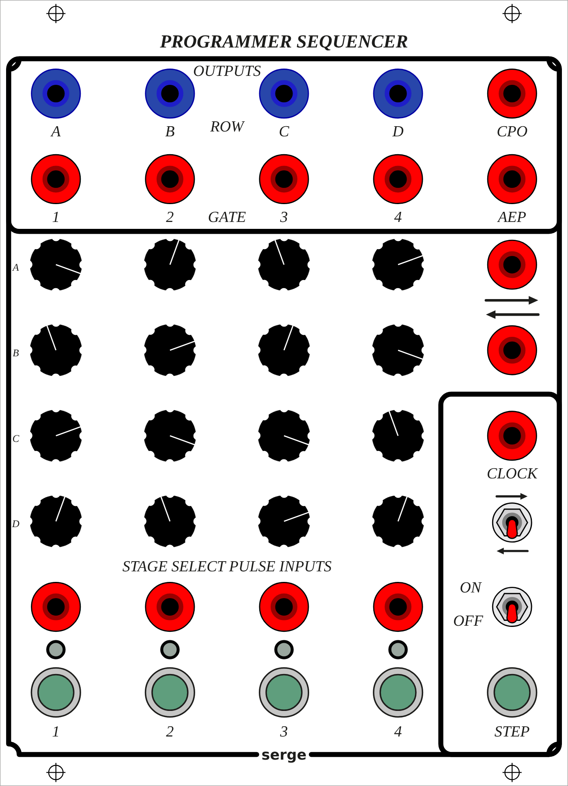

Programmer Sequencer
Sequencing Programmer · CGS87
A random-access voltage programmer: each stage holds a row of preset voltages and can be selected by pulse, button or up/down stepping.
- Design
- Serge Tcherepnin; CGS87 by Ken Stone (Serge-inspired)
- Function
- Sequencer
- Panel widths
- 5", 9"
- Build options
- 1
Panels in this repo


How it works
Each stage stores one knob per row (A to D). Whichever stage is active sends its knob voltages to the row outputs, so the module works both as a sequencer and as a bank of preset voltages.
Stages are chosen directly by a pulse at their own input or a press of their button, or stepped up and down by the clock or direction inputs. Each stage also gives a pulse while it is selected, and patching a stage pulse back to the first stage sets the sequence length.
CPO goes high while any button is held and AEP gives a pulse on every stage change. Ken Stone's CGS87 builds eight stages per board, cascadable, with an interface board for the outputs; he notes it follows the Serge programmer except for the up/down inputs.
Controls and jacks
| Name | Type | What it does |
|---|---|---|
| Row knobs A-D | knobs | Preset voltage per stage and row. |
| A, B, C, D | outputs | Row voltages of the active stage. |
| Stage pulse inputs + buttons | inputs / buttons | Select a stage directly. |
| Stage gate outputs | outputs | High while the stage is active. |
| CLOCK / UP / DOWN, direction switch | inputs / switch | Step through the stages. |
| CPO, AEP | outputs | Button gate and all-event pulse. |
Build options
Ken Stone CGS87 Programmer Sequencer
- Offered as
- PCB from Elby Designs; schematic, parts list and construction notes on Ken Stone's page
- PCB
- Elby Designs: CGS87 / CGS387 Programmer Sequencer
- Schematic
- availableCGS87 Programmer Sequencer schematic
- BOM
- availableCGS87 Programmer Sequencer parts list (in the BOM spreadsheet below)
One CGS87 board holds eight stages; the CGS87S interface board drives the outputs. Optional on-off-on switches per stage set skip/stop behaviour.
Ken Stone's Serge-derived designs may be built for personal use only; Serge Tcherepnin keeps all rights to his circuits. Schematics, parts lists and PCBs belong to their designers and sellers, so these pages link to them rather than copying them.
Bill of materials
Spreadsheet: programmer-sequencer.csv (CSV; opens in Excel, Numbers or Google Sheets). The Mouser columns are there to fill in with order links.
Ken Stone CGS87 Programmer Sequencer (40 lines)
| Section | Type | Value / part | Qty | Notes |
|---|---|---|---|---|
| CGS87S board | Misc | Ferrite Bead | 2 | from https://open4umodular.github.io/synthpanel/modules/cgs87_prog.html |
| CGS87S board | Resistor | 330Ω | 4 | from https://open4umodular.github.io/synthpanel/modules/cgs87_prog.html |
| CGS87S board | Resistor | 1k | 4 | from https://open4umodular.github.io/synthpanel/modules/cgs87_prog.html |
| CGS87S board | Resistor | 2.2k | 2 | from https://open4umodular.github.io/synthpanel/modules/cgs87_prog.html |
| CGS87S board | Resistor | 10k | 6 | from https://open4umodular.github.io/synthpanel/modules/cgs87_prog.html |
| CGS87S board | Resistor | 22k | 1 | from https://open4umodular.github.io/synthpanel/modules/cgs87_prog.html |
| CGS87S board | Resistor | 33k | 1 | from https://open4umodular.github.io/synthpanel/modules/cgs87_prog.html |
| CGS87S board | Resistor | 47k | 9 | from https://open4umodular.github.io/synthpanel/modules/cgs87_prog.html |
| CGS87S board | Resistor | 100k | 17 | from https://open4umodular.github.io/synthpanel/modules/cgs87_prog.html |
| CGS87S board | Resistor | 150k | 1 | from https://open4umodular.github.io/synthpanel/modules/cgs87_prog.html |
| CGS87S board | Resistor | 220k | 2 | from https://open4umodular.github.io/synthpanel/modules/cgs87_prog.html |
| CGS87S board | Resistor | 470k | 3 | from https://open4umodular.github.io/synthpanel/modules/cgs87_prog.html |
| CGS87S board | Resistor | 1M | 1 | from https://open4umodular.github.io/synthpanel/modules/cgs87_prog.html |
| CGS87S board | Capacitor | 47pF | 8 | from https://open4umodular.github.io/synthpanel/modules/cgs87_prog.html |
| CGS87S board | Capacitor | 10nF (=0.01uF) | 4 | from https://open4umodular.github.io/synthpanel/modules/cgs87_prog.html |
| CGS87S board | Capacitor | 100nF (=0.1uF) monoblock | 3 | from https://open4umodular.github.io/synthpanel/modules/cgs87_prog.html |
| CGS87S board | Capacitor | 100nF (=0.1uF) 1206 SMT | 2 | from https://open4umodular.github.io/synthpanel/modules/cgs87_prog.html |
| CGS87S board | Capacitor | 10uF electrolytic | 2 | from https://open4umodular.github.io/synthpanel/modules/cgs87_prog.html |
| CGS87S board | Semiconductor | 1N4148 | 2 | from https://open4umodular.github.io/synthpanel/modules/cgs87_prog.html |
| CGS87S board | Semiconductor | BC547 | 3 | from https://open4umodular.github.io/synthpanel/modules/cgs87_prog.html |
| CGS87S board | Semiconductor | BC557 | 2 | from https://open4umodular.github.io/synthpanel/modules/cgs87_prog.html |
| CGS87S board | Semiconductor | LM393 | 1 | from https://open4umodular.github.io/synthpanel/modules/cgs87_prog.html |
| CGS87S board | Semiconductor | TL074 | 2 | from https://open4umodular.github.io/synthpanel/modules/cgs87_prog.html |
| CGS87S board | Misc | MTA-156 connector 4Pin | 1 | from https://open4umodular.github.io/synthpanel/modules/cgs87_prog.html |
| CGS87S board | Misc | CGS87S PCB | 1 | from https://open4umodular.github.io/synthpanel/modules/cgs87_prog.html |
| CGS87 board | Resistor | 680Ω | 8 | from https://open4umodular.github.io/synthpanel/modules/cgs87_prog.html |
| CGS87 board | Resistor | 820Ω | 8 | from https://open4umodular.github.io/synthpanel/modules/cgs87_prog.html |
| CGS87 board | Resistor | RLED (10k) | 8 | from https://open4umodular.github.io/synthpanel/modules/cgs87_prog.html |
| CGS87 board | Resistor | 47k | 24 | from https://open4umodular.github.io/synthpanel/modules/cgs87_prog.html |
| CGS87 board | Resistor | 100k | 40 | from https://open4umodular.github.io/synthpanel/modules/cgs87_prog.html |
| CGS87 board | Resistor | 150k | 24 | from https://open4umodular.github.io/synthpanel/modules/cgs87_prog.html |
| CGS87 board | Resistor | 470k | 8 | from https://open4umodular.github.io/synthpanel/modules/cgs87_prog.html |
| CGS87 board | Resistor | 1M | 8 | from https://open4umodular.github.io/synthpanel/modules/cgs87_prog.html |
| CGS87 board | Capacitor | 470pF | 8 | from https://open4umodular.github.io/synthpanel/modules/cgs87_prog.html |
| CGS87 board | Capacitor | 10nF (=0.01uF) | 16 | from https://open4umodular.github.io/synthpanel/modules/cgs87_prog.html |
| CGS87 board | Capacitor | 22nF (=0.022uF) | 8 | from https://open4umodular.github.io/synthpanel/modules/cgs87_prog.html |
| CGS87 board | Semiconductor | 1N4148 | 40 | from https://open4umodular.github.io/synthpanel/modules/cgs87_prog.html |
| CGS87 board | Semiconductor | BC547 | 8 | from https://open4umodular.github.io/synthpanel/modules/cgs87_prog.html |
| CGS87 board | Semiconductor | BC557 | 24 | from https://open4umodular.github.io/synthpanel/modules/cgs87_prog.html |
| CGS87 board | Misc | CGS87 PCB | 1 | from https://open4umodular.github.io/synthpanel/modules/cgs87_prog.html |
Panel hardware
Front-panel parts for each panel in this repo, counted from the panel files. Board parts (resistors, ICs, trimmers) are in each build option's own BOM.